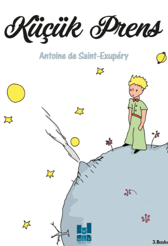
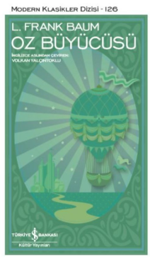
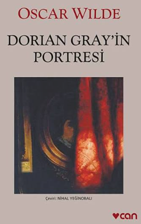
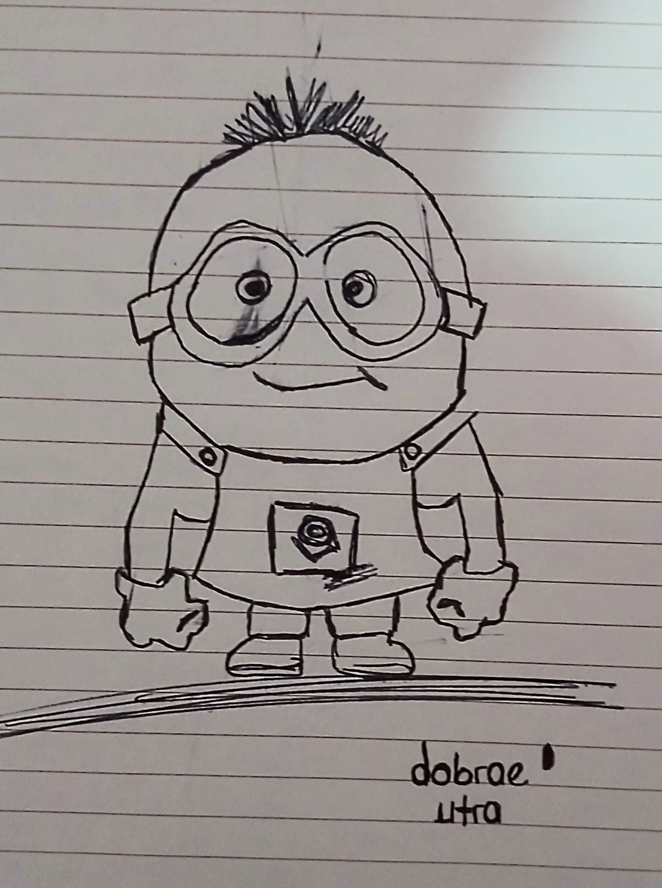
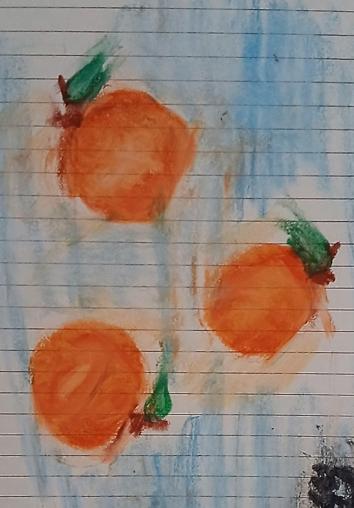
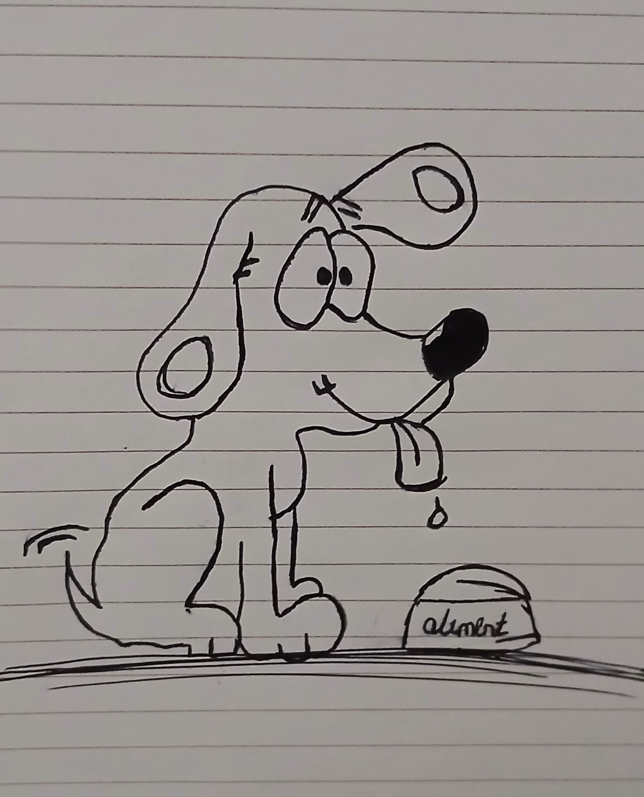

I am in my fourth year of Geomatics Engineering. I live in Ankara. I would like to master's degree in remote sensing. I speak English at an intermediate level and German at a beginner level. This is my personal web page like an autobiography.
| Cover | Book Title & Author | Date Read |
|---|---|---|
|
 |
The Little Prince Antoine de Saint-Exupéry |
2015 |
|
 |
The Wonderful Wizard of Oz L. Frank Baum |
2018 |
|
 |
The Picture of Dorian Gray Oscar Wilde |
2021 |


